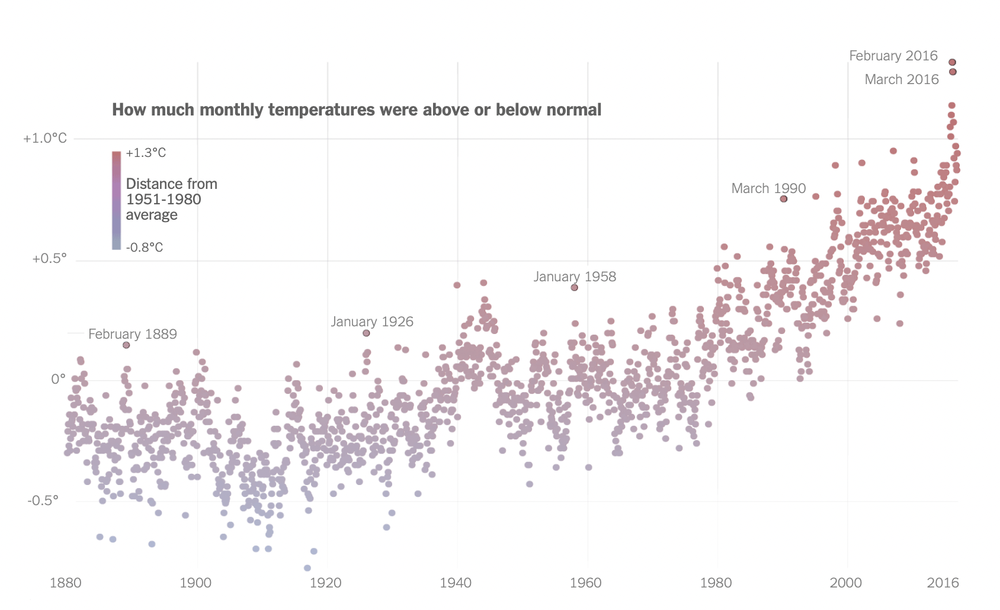

Post
Global Temperature Trends
How 2016 became Earth's hottest year on record

Heating up
Of the 17 hottest years ever recorded, 16 have now occurred since 2000. The chart above is my recreation of a wonderful graphic from the New York Times, featured in the article, "How 2016 Became Earth’s Hottest Year on Record". Thanks to publicly available data from NASA we can plot temperatures going back to 1880. Once visualized we can clearly see temperatures climbing and increasingly rapidly in the past 2 decades.
Warming stripes
Reduced to just one dimension, the warming trend becomes more obvious. Each stripe or bar represents a single year or month, and the color of the stripe represents the temperature anomaly for that specific time period. Blue shades indicate cooler temperatures or negative anomalies, while red shades represent warmer temperatures or positive anomalies.
You’ll notice that the stripes take a sharp turn toward the yellows, and then reds, starting in the late 1970s, reflecting the significant rise in global average temperatures. Last year was a dark red. How dark the stripes get by the end of this century depends on whether the world as a whole keeps pumping more greenhouse gas emissions into the atmosphere.
Hot streak
Arranging the stripes in a horizontal sequence and simplifying the color palette creates a visually striking pattern that allows for easy interpretation of temperature trends over time.
What can be done?
“A world that is safer and more secure, more prosperous, and more free.” In December 2015, that was the world then-president Barack Obama envisioned we would leave today’s children when he announced that the United States, along with nearly 200 other countries, had committed to the Paris Agreement, an ambitious global action plan to fight climate change.
The Paris Agreement charted a new course in the effort to combat global climate change, requiring countries to make commitments and progressively strengthen them.
But less than two years after that proclamation, then-president Donald Trump put that future in jeopardy by announcing his plan to withdraw the United States from the accord—a step that became official on November 4, 2020—as part of a larger effort to dismantle decades of U.S. environmental policy.
Paris Accords
Replacing fossil fuels is becoming easier. But temperatures are still likely to rise too far. Global CO2 emissions need to be halved by 2030 to limit global average temperatures to 1.5°C above pre-industrial levels.
Original graphic from the New York Times
